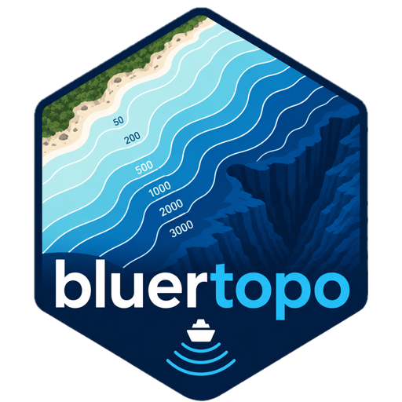

Skip to contents
bluertopo
0.0.1
Get started
Reference
Examples
Example gallery
Discover tiles and coverage
Download original assets
Extract elevation with terra
Compare resolution policies
Mixed grids and output grid
Layers and RAT metadata
Articles
Get BlueTopo
Resolution policies
Downloads, cache, and reproducibility
Mixed UTM collections
Layers and RAT metadata
Changelog

Articles
Examples
Example gallery
Discover tiles and coverage
Download original assets
Extract elevation with terra
Compare resolution policies
Mixed grids and output grid
Layers and RAT metadata
Guides
Get BlueTopo
Resolution policies
Downloads, cache, and reproducibility
Mixed UTM zones and terra collections
Layers, contributor values, and RAT metadata